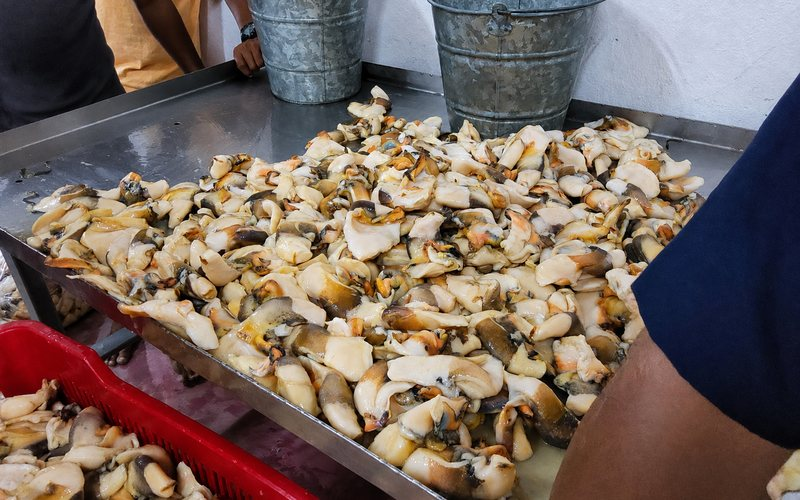
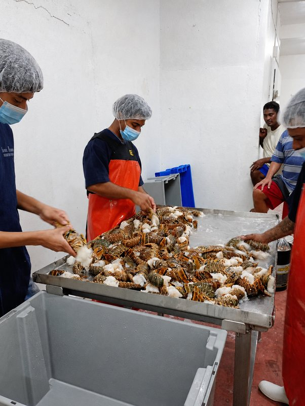
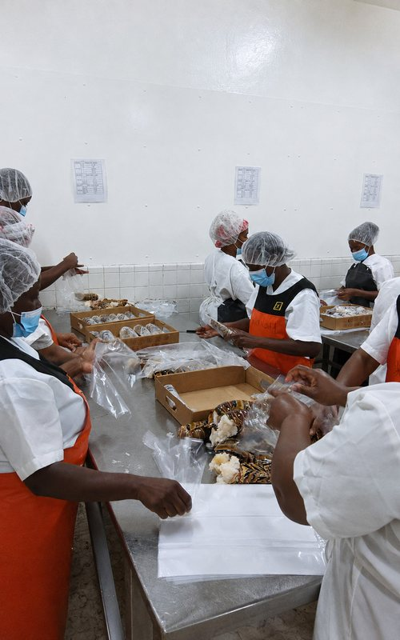
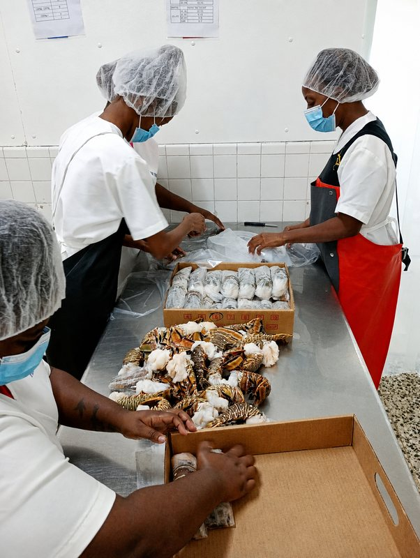
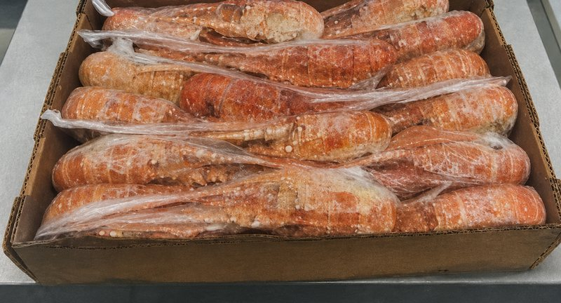

Spiny lobster
Tails, head meat, and whole lobster raw or cooked — four frozen lobster products from Belize’s spiny lobster fishery.
See the productsNational Fishermen Producers Co-operative Society Ltd.
NATFISH Member-owned in Belize since 1966
A co-operative of 636 Belizean fishers, preparing quality frozen seafood for local and international markets.

National Fishermen Producers Co-operative Society Ltd was registered in Belize City on 29 April 1966 and has grown to 636 fisher members. It is owned by those members and governed by a seven-member Managing Committee elected from the membership.
The co-operative supports its members through education in fishery management, and by purchasing and marketing their produce — working to secure the best possible value in international markets and improve members' livelihoods.
About NATFISH
Four steps between the landing and the container, photographed at the co-operative's own facility.

Landed catch is rinsed and checked at the washing station before it goes any further.

Each lot is weighed and sorted so what leaves the room matches what the buyer agreed to.

Product is bagged and packed into cartons by hand, ready for freezing.

Packed cartons move into cold storage and stay there until they ship.
Frozen spiny lobster in four preparations, frozen queen conch, lionfish fillet and packed fish fillets and portions. Availability follows Belize's regulated seasons and is confirmed directly with NATFISH.
Tails, head meat, and whole lobster raw or cooked — four frozen lobster products from Belize’s spiny lobster fishery.
See the products
Frozen queen conch meat, 85% cleaned, handled and packed at the co-operative’s own facility.
See the productsLionfish fillet, taken from an invasive species that Belizean fishers help keep in check.
See the products
Seafood Seasons
Belize closes its lobster and conch fisheries every year so stocks can breed. Those closed seasons are what keep the fishery, and the livelihoods built on it, working season after season.

NATFISH works to operate in accordance with HACCP and U.S. FDA regulations. Food safety and consumer protection are among the co-operative's highest priorities as it supports globally recognized artisanal fishing.
Responsible Fisheries
From June 20 to 29, 2026, a NATFISH delegation travelled to Taiwan to represent Belize and its fishing community. During the visit, National Fishermen participated as an official exhibitor at Food Taipei 2026, held from June 24 to 27, helping showcase Belizean seafood to an international audience.

Current trade-promotion material from BELTRAIDE features seafood from National Fishermen, keeping Belizean product visible to international trade audiences.
Evergreen writing on Belizean seafood: what the co-operative handles, how it is prepared and what buyers should know.
Learn what sets Belizean Caribbean spiny lobster apart and how NatFish connects local fishers, careful processing and the market.
Read the article on Belizean spiny lobster


Tell NATFISH what you need and the team will review your enquiry and come back to you on availability and next steps.
#1 Angel Lane, Belize City, Belize